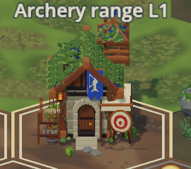
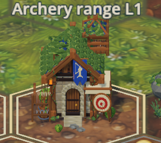
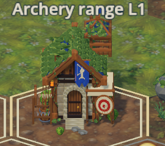

ODOT / FRESH ACTUAL GAME CAPTURES / RX 6800
Smaller painted detail.
No added enclosing dark grid.
Three fresh owned-window runs: ORIGINAL, rejected INITIAL POC, and CORRECTED landed asset pin. The correction removes the conspicuous same-family dark hex perimeter and giant repeating flower/stone landmarks at normal game scale. Fine paint remains richer than the sparse original; close-view softness, fixed-map repetition, angular cross-family boundaries and weak pine identity remain. These are bounded implementation-worker visual observations, not production-art certification or a claim of seamless terrain.
Current report, exact checks, limitations and coherent rollback · Fresh source/manifest/DLL/image hashes, GPU/PID/native-window identities and observed resource costs · Native-resolution overview triple: original / initial / corrected · Historical original/initial gallery (not corrected passes)
Every stage uses the same review-fixed executable witness with only coherent asset inputs/catalog revision changed, 1100×820 Windowed X11, AMD RX6800 / RADV, Forward+ Vulkan, seed 1, fair weather, cosmetic time 12, exposure 1, High/Woodland/4×MSAA and exactly matched observed camera/framing/graphics. Captures are of the recorded uncommitted working-tree inputs, not the base commit alone or a later pipeline head. Click each image for native pixels: the first two overviews show normal game scale; close views use the existing permitted 3× zoom. Ambient animation/particles use real elapsed time, not identical poses. No desktop pixels or other windows were captured.
Archery — native pixels, no invented detail
ORIGINAL · same native 270×240 crop
INITIAL · same native 270×240 crop
CORRECTED · same native 270×240 crop
Normal fitted settlement overview
Paid Archery Range — permitted 3× close view
Settlement ground — close view
Settlement river divider and bridge
ORIGINAL · assets 133c7cdeb368INITIAL · assets 2d88d355393fCORRECTED · assets 60ce86f04c02 Later live settlement river frame